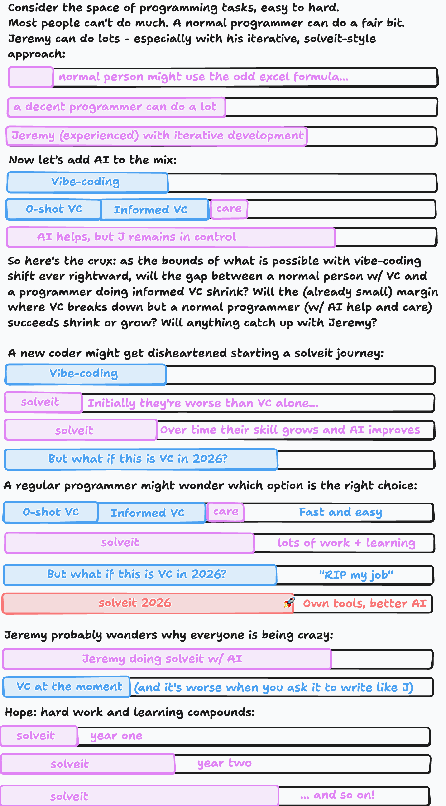

What Is Solveit?
At the end of last year, we ran a small course titled “How To Solve It With Code”. We closed signups after a day, and 1000 keen beans joined us for a 10-week deep dive into our general approach to solveing problems. It was taught via the vehicle of the ‘Advent of Code’ programming challenges and run in a new, purpose-built tool called solveit. As the course progressed, we had lots of fun going far beyond the original scope, exploring web development (with FastHTML), AI, business (with Eric Reis as a special guest), writing and more. And the solveit tool became an extremely useful test-bed for ideas around AI-assisted coding, learning and exploration. In the year since, we’ve continued to refine and expand both the process and the tools built in service of said process, and are ramping up for another cohort to share these developments with a wider audience. So, I figure it’s high time I attempt to write down my own version of what ‘the solveit method’ is… :)
Inspiration from Polya
George Polya was a Hungarian mathematician who wrote the influential book “How to Solve It” in 1945. In it, he shares his philosophies on education (focus on acive learning,heuristic thinking and careful questioning to guide stodents towards discovering answers for themselves) and outlines a four-step problem-solving framework:
- Understand the Problem: identify what you’re being asked to do; restate the problem
- Devise a Plan: draw on similar problems; break down into manageable parts; consider working backward; simplify the problem
- Carry Out the Plan: verify each step
- Look Back and Reflect: consider alternatives; extract lessons learned
He was focused on mathematics, but as Jeremy and I tried to codify our approach to solveing problems with code, we realized that these ideas translate far beyond maths!
Application to Coding: iterative, exploratory coding in notebook-like environments.
Let’s consider a quick example. For 2024’s Advent of Code, Day 1’s solution involves comparing two lists, sorted by value (there’s a whole backstory involving elves, which you can read if you like). Let’s imagine we’ve considered the problem, and are now focused on a small sub-task: extracting the first (sorted) list. We start with the sample data provided:
pythonx = '3 4\n4 3\n2 5\n1 3\n3 9\n3 3'
Our plan might be:
- Split into a list of lines
- Grab the first number from each line
- Sort
You could likely write this function in one go. Indeed, if you typed # Get a sorted list of the first number from each line your AI auto-complete could likely do the rest. But we’re trying to build a discipline that will serve us on harder tasks that neither humans nor AI can one-shot. So, after thinking through the plan, we begin working on individual steps. We aim to write no more than a few lines of code at a time, with each piece giving some useful output that you can use to verify that you’re on the right track:
lines = x.splitlines()lines>>> ['3 4', '4 3', '2 5', '1 3', '3 9', '3 3']Now we build up a list comprehension to get the first elements. We might start with [o for o in lines] and then add bits one at a time, inspecting the output, building up to:
l1 = [int(o.split()[0]) for o in lines]
l1
>>> [3, 4, 2, 1, 3, 3]Now sorting:
sorted(l1)
>>> [1, 2, 3, 3, 3, 4]Now that we’ve run all the pieces individually, and checked that the outputs are what we’d expect, we can stack them together into a function:
def get_list(x):
lines = x.splitlines()
l1 = [int(o.split()[0]) for o in lines]
return sorted(l1)
get_list(x)
>>> [1, 2, 3, 3, 3, 4]At this point, you’d reflect on the solution, think back to the larger plan, perhaps ask yourself (or ask AI - more on that later) if there are better ways you could do it. You may be thinking that this is far too much work for sorted(int(line.split()[0]) for line in x.splitlines()) - as your skill increases you can tailor the level of granularity, but the idea remains the same: working on small pieces of code, checking the outputs, only combining them into larger functions once you’ve tried them individually, and constantly reflecting back on the larger goal.
The Power of Fast Feedback Loops
The superpower that this kind of live, iterative coding gives you is near-instant feedback loops. You’re not building your giant app, waiting for the code to upload, clicking through to a website and then checking a debug console for errors - you’re inspecting the output of a chunk of code and seeing if it matches what you expected. It’s still possible to make mistakes and miss edge cases, but it is a LOT easier to catch most mistakes early when you code in this way.This idea of setting things up so that you get feedback as soon as possible pops up again and again. Our cofounder Eric Ries talks about this in his book ‘The Lean Startup’, where getting feedback from customers is valuable for quick iteration on product or business ideas. Kaggle pros talk about the importance of fast evals - if you can test an idea in 5 minutes, you can try a lot more ideas than you could if each experiment requires 12 hours of model training.This is one reason many people like ‘Test Driven Development’ - where carefully written tests check for expected behaviour. The answer.ai style of notebook-driven development just uses a mix of “proper” tests (e.g. asserts thoughout the notebooks that check things formally) and the human-based sanity checks based on inspecting outputs as we go.
AI: Dialog Engineering Keeps Context Useful
One issue with current chat-based models is that once they go off the rails, it’s hard to get back on track. The model is now modelling a language sequence that involves the AI making mistakes - and more mistakes are likely to follow! Because solveit dialogs are fluid and editable, it’s much easier to go back and edit/remove dead ends or unrelated explorations. You can even edit past AI responses, to steer it into the kinds of behaviour you’d prefer. Combine this with the ability to easily hide messages from the AI or to pin messages to keep them in context even as the dialog grows beyond the context window and starts to be truncated, and you have a recipe for continued AI helpfullness as time goes on.
Of course, this is all useful for humans too! The discipline of keeping things tidy, using (collapsible) headings to organise sections, writing notes on what you’re doing or aiming for, and even past questions+answers with the AI all make it a pleasure to pick back up old work.
AI: Collaboration not Replacement
One thing is still (intentionally) hard in solveit though, and that is getting the AI to actually write all your code in a hands-off way. We’ve made various choices to gently push towards the human remaining in control:
- Defaults to code inputs
- AI outputs code in fenced blocks, but these are not added to your code or run until you choose to do so. There are shortcuts to add them, but this extra sterp encourages you to read + refactor before mindlessly running
- In ‘Learning’ mode especially, the AI will gently guide you to writing small steps rather than providing a big chunk of code, unless you really specifically ask it to do so.
- In ‘Learning’ mode, the AI ‘ghost text’ auto-complete suggestions don’t show unlesss you trigger them with a keyboard shortcut.
Even the choice to have the editor be fairly small and down at the bottom emphasizes that this is a REPL/dialog, optimised for building small, understandable pieces.
Learning Trajectory (Getting More Powerful)
This brings us to another foundational piece of the solveit approach: a learning ,mindset. It’s great that we can ask AI to fill in the gaps of our knowledge, or to save some time with fiddly pieces like matplotlib plots or library-specific boilerplate. But when the AI suggests something you don’t know, it is important not to skip it and move on - otherwise that new piece will never be something you learn!
We try to build the discipline to stop and explore anytime something like this comes up. Fortunately, it’s really easy to do this - you can add new messages trying out whatever new thing the AI has shown you, asking how it works, getting demo code, and poking it until you’re satisfied. And then the eveidence of that side-quest can be collapsed below a heading (for later ref) or deleted, leaving you back in the main flow but with a new piece of knowledge in your brain.

Earlier this year, I sketched out some doodles trying to think through whether we should be teaching this way. What if AI keeps getting better and better, to the point where there’s little point for the average person actually learning to master any of these skills? If you assume your coding skills stay static, and imagine the AI continuing to get better, you may feel kinda bleak. The thing is, skill doesn’t have to be static! And as both you and the AI you’re carefully using get better, you will learn faster and be able to accomplish more and more.
Mastery Requires Deliberate Practice (WIP)
This is all hard work! It’s like exercise, or practicing a musical instrument. And like any pursuit of mastery, I don’t know that it’s for everyone. But it is satisfying…
Long-Term Software Creation != Vibe-Coded Demos (WIP)
I’ve done lots of small projects. Big projects, new to me, different options. AAI’s unusual approach: carefully construct a substrate that allows you to fit ~anything into your head, improving it over time. Accept no slop!
So you hate vibe-coding?
No :) I love it, for some things. There is much more software that I want written than I have time to write. There are some things I don’t much care to learn about, but still need to code for. There are many, many new options for non-coders now, thanks to the ability to conjure up bespoke software from vague descriptions. We’re just not fans of it when it comes to software that matters, and don’t think it replaces the learning value of truly working at programming as a craft.
OK, where can I use solveit
We’re running another course soon, which will be $400. I appreciate this is spendy. That will let us test some scaling and features, and work with another cohort to build the solveit skill. Once that’s done, we’re hoping to open it up on a usage-based billing system. I can’t wait for it to be available to everyone! Please be patient - I think it’ll be worth the wait :)
Conclusions
There we go - some musings on the solveit approach. There’s a ton more to the app - web magic with FastHTML, meta-programming by giving the AI tools to modify the dialog and itself, lots of tricks we’ve developed for getting the most out of AI… but the important thing is the mindset, and it’s one which you can almost equally practice in any jupyter notebook.
I still have wide error bars on the future of AI and coding, but no matter how that goes, I’m glad I get to work on getting better at something I enjoy for now :)
I hope you’ve enjoyed this rambly post! I’d love to hear your thoughts! Stay tuned for info on the new course shortly (I’ll link here when we announce it). Cheers - J